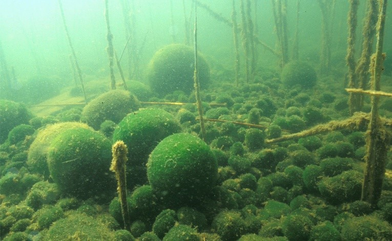
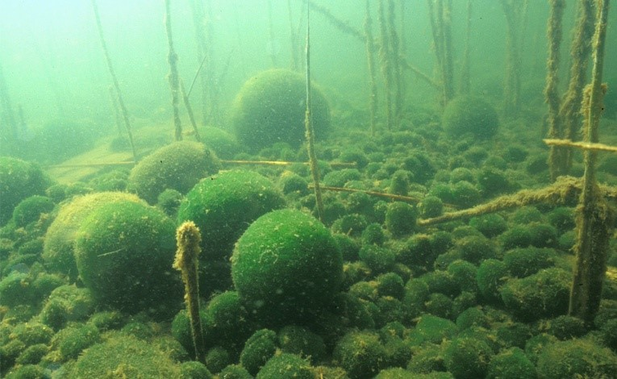

Список водоростей, занесених до Червоної книги України.
До списку входить 60 видів водоростей.
З них:
- 30 - вразливі,
- 29 - рідкісні,
- 1 - зникаючий.

Список водоростей, занесених до Червоної книги України.
До списку входить 60 видів водоростей.
З них:
